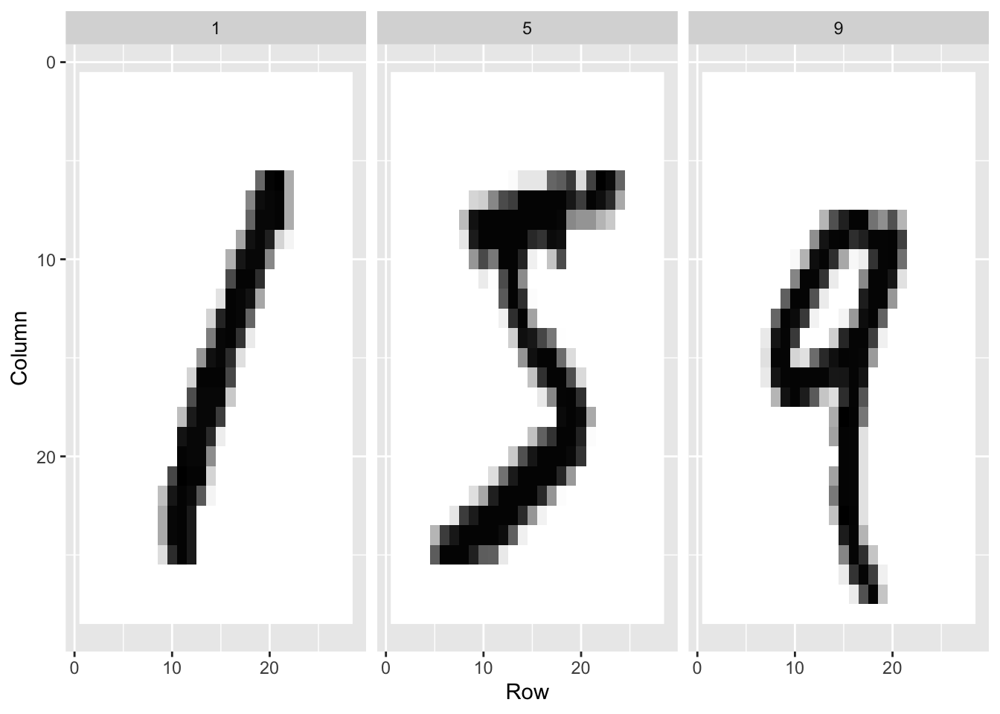
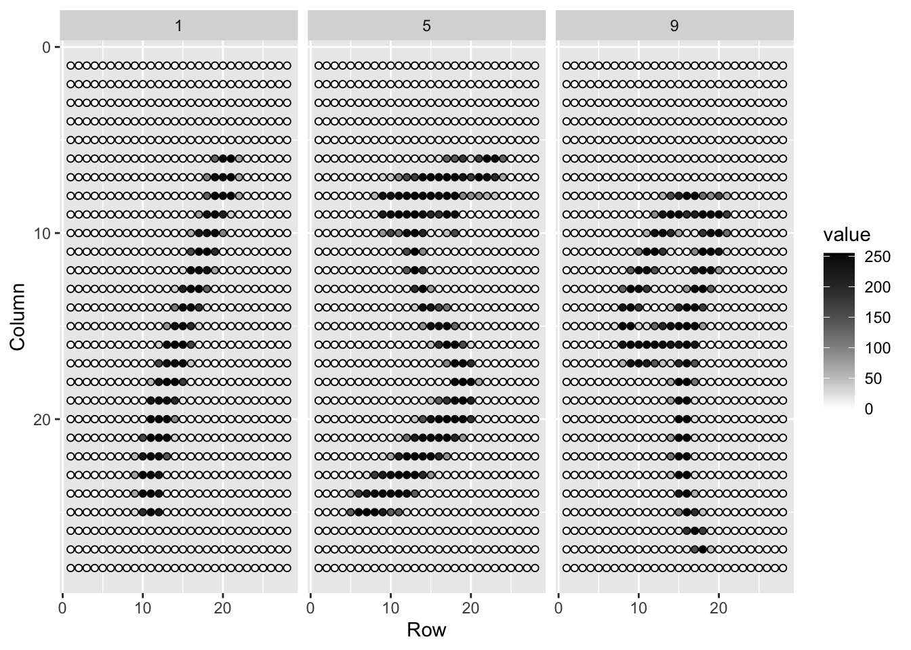
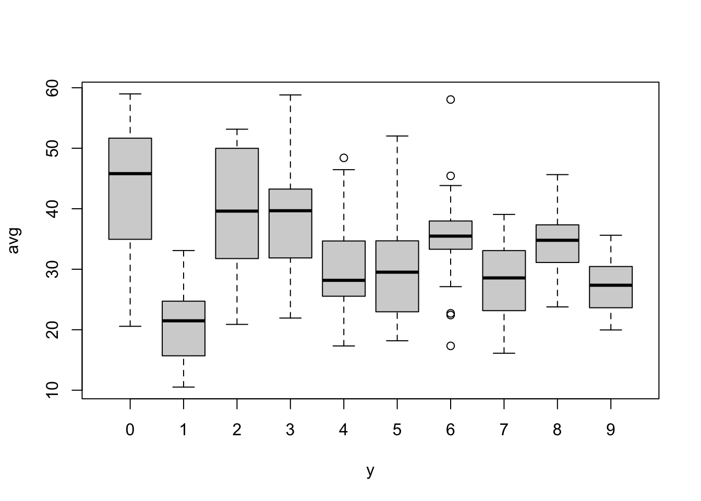
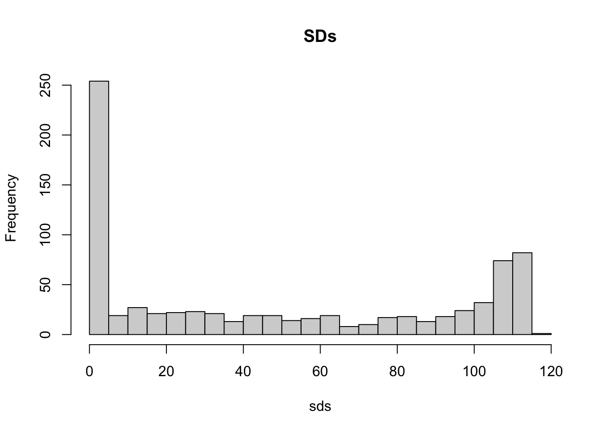
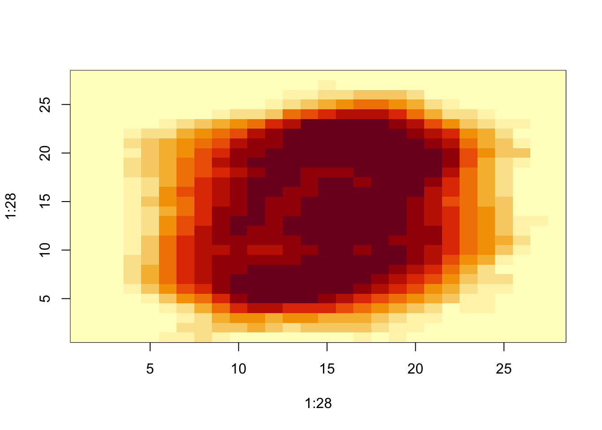
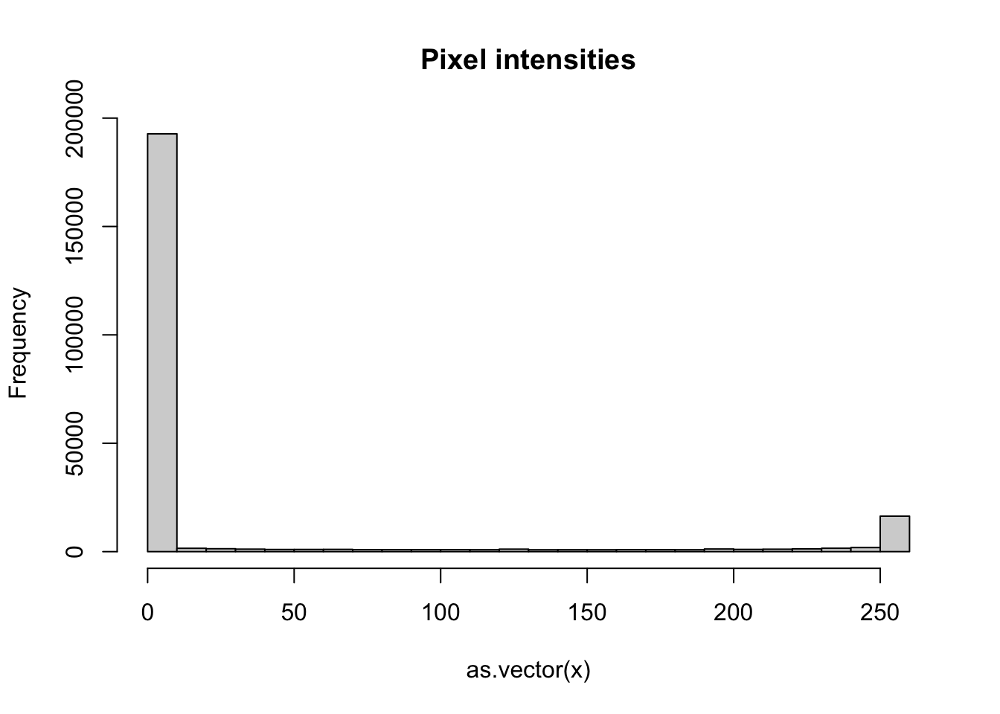

25 Matrices in R
With matrices, variables for each observation are stored in a row, resulting in a matrix with as many columns as variables.
In statistics we refer to values represented in the rows of the matrix as the covariates and in machine learning we refer to them as the features.
25.1 Case study: MNIST
An example comes from handwritten digits. The first step in handling mail received in the post office is sorting letters by zip code:

These are the digitized images:
The images are converted into \(28 \times 28 = 784\) pixels
For each pixel, we obtain a grey scale intensity between 0 (white) and 255 (black).

For each digitized image, indexed by \(i\), we are provided 784 variables and a categorical outcome, or label, representing which digit among \(0, 1, 2, 3, 4, 5, 6, 7 , 8,\) and \(9\) the image is representing. Let’s load the data using the dslabs package:
library(tidyverse)
library(dslabs)
if (!exists("mnist")) mnist <- read_mnist()In these cases, the pixel intensities are saved in a matrix:
class(mnist$train$images)[1] "matrix" "array" This matrix represents 60,000 observations, each a digit.
For example, let’s take a smaller subset:
x <- mnist$train$images[1:300,]
y <- mnist$train$labels[1:300]25.2 Mathematical notation
- When working with linear algebra in R we have three types of objects:
- scalars,
- vectors, and
- matrices.
A scalar is just one number, for example \(a = 1\).
Vectors are like the numeric vectors we define in R:
length(x[20,])[1] 784- Each feature is represented by a columns of
x. For example, the first column contains the values for the first pixel of all 1,000 images:
length(x[,1])[1] 300In matrix algebra, we use lower case bold letters to represent a vector of features/predictors/covariates:
\[ \mathbf{x} = \begin{pmatrix} x_1\\\ x_2\\\ \vdots\\\ x_n \end{pmatrix} \]
Similarly, we can use math notation to represent different features by adding an index:
\[ \mathbf{x}_1 = \begin{pmatrix} x_{1,1}\\ \vdots\\ x_{n,1} \end{pmatrix} \mbox{ and } \mathbf{x}_2 = \begin{pmatrix} x_{1,2}\\ \vdots\\ x_{n,2} \end{pmatrix} \]
- A matrix can be defined as a series of vectors of the same size joined together as columns:
x_1 <- 1:5
x_2 <- 6:10
cbind(x_1, x_2) x_1 x_2
[1,] 1 6
[2,] 2 7
[3,] 3 8
[4,] 4 9
[5,] 5 10- Mathematically, we represent them with bold upper case letters:
\[ \mathbf{X} = ( \mathbf{x}_1 \, \mathbf{x}_2 ) = \begin{pmatrix} x_{1,1}&x_{1,2}\\ \vdots&\vdots\\ x_{n,1}&x_{n,2} \end{pmatrix} \]
- We can use this notation to denote an arbitrary number of predictors with the following \(n\times p\) matrix, for example, with \(n = 300\), and \(p=784\):
\[ \mathbf{X} = \begin{pmatrix} x_{1,1}&x_{1,2}&\dots & x_{1,p} \\ x_{2,1}&x_{2,2}&\dots & x_{2,p} \\ \vdots & \vdots & \ddots & \vdots & \\ x_{n,1}&x_{n,2}&\dots & x_{n,p} \end{pmatrix} \]
- The dimension of a matrix is often an important characteristic needed to assure that certain operations can be performed.
dim(x)[1] 300 784
Notation for rows versus columns
Bold lower case letter are also commonly used to represent rows, rather than columns, of a matrix. This can be confusing because \(\mathbf{x}_1\) can represent either the first row or the first column. One way to distinguish then is using notation similar to computer code by using the colon \(:\) to represent all. So \(\mathbf{X}_{1,:}\) is a row, the first row and all the columns, and \(\mathbf{X}_{:,1}\) is a column, the first column and all the rows. Another approach is to distinguish by the index, with \(i\) used for rows and \(j\) used for columns. So \(\mathbf{x}_i\) is the \(i\)th row and \(\mathbf{x}_j\) is the \(j\)th column. With this approach it is important to clarify which dimension, row or column, is being represented. We use this last one in the next chapter.
25.3 Converting vectors to a matrices
- Vectors can be thought of as \(n\times 1\) matrices. However, in R, a vector does not have dimensions:
dim(x_1)NULL- Vectors are not matrices in R. However, we can easily convert then to a matrix:
dim(matrix(x_1))[1] 5 1It is also possible to change the dimensions of the resulting matrix.
To see an example of how can this be useful, consider wanting to visualize the the rows pixel intensities in their original \(28\times28\) grid.
my_vector <- 1:15
mat <- matrix(my_vector, 5, 3)
mat [,1] [,2] [,3]
[1,] 1 6 11
[2,] 2 7 12
[3,] 3 8 13
[4,] 4 9 14
[5,] 5 10 15- We can fill by row by using the
byrowargument:
mat_t <- matrix(my_vector, 3, 5, byrow = TRUE)
mat_t [,1] [,2] [,3] [,4] [,5]
[1,] 1 2 3 4 5
[2,] 6 7 8 9 10
[3,] 11 12 13 14 1525.4 Motivating questions
To motivate the use of matrices in R, we will pose five questions/challenges related to the handwritten digits data:
1. Do some digits require more ink to write than others? We will study the distribution of the total pixel darkness and how it varies by digits.
2. Are some pixels uninformative? We will study the variation of each pixel across digits and remove predictors (columns) associated with pixels that don’t change much and thus can’t provide much information for classification.
3. Can we remove smudges? We will first, look at the distribution of all pixel values. Then we will use this to pick a cutoff to define unwritten space. Then, set anything below that cutoff to 0.
4. Binarize the data. First, we will look at the distribution of all pixel values. We will then use this to pick a cutoff to distinguish between writing and no writing. Then, we will convert all entries into either 1 or 0.
5. Standardize the digits. We will scale each of the predictors in each entry to have the same average and standard deviation.
Warning
The matrix function recycles values in the vector without warning if the product of columns and rows does not match the length of the vector:
matrix(1:3, 2, 5)Warning in matrix(1:3, 2, 5): data length [3] is not a sub-multiple or multiple
of the number of rows [2] [,1] [,2] [,3] [,4] [,5]
[1,] 1 3 2 1 3
[2,] 2 1 3 2 1- To put the pixel intensities of our, say, 3rd entry, which is a 4 into grid, we can use:
grid <- matrix(x[3,], 28, 28)- Confirm with plots
image(1:28, 1:28, grid)
image(1:28, 1:28, grid[, 28:1])25.5 Row and column summaries
- The function
rowSumstakes a matrix as input and computes the desired values:
sums <- rowSums(x)- We can also compute the averages with
rowMeans
avg <- rowMeans(x)- For the first task, look at boxplots:
boxplot(avg ~ y)
Is this expected?
We can compute the column sums and averages using the function
colSumsandcolMeans, respectively.
The matrixStats package adds functions that performs operations on each row or column very efficiently, including the functions rowSds and colSds.
25.6 apply
The
applyfunction lets you apply any function, not justsumormean, to the rows or columns of a matrix.The first argument is the matrix, the second is the dimension, 1 for rows, 2 for columns, and the third is the function.
So, for example,
rowMeanscan be written as:
avgs <- apply(x, 1, mean)- for the sds:
sds <- apply(x, 2, sd)- The trade off for this flexibility is that these operations are not as fast as dedicated functions such as
rowMeans.
25.7 Filtering columns based on summaries
- We now turn to task 2: studying the variation of each pixel and removing columns associated with pixels that don’t change much and thus do not inform the classification.
library(matrixStats)
Attaching package: 'matrixStats'The following object is masked from 'package:dplyr':
countsds <- colSds(x)- A quick look at the distribution of these values shows that some pixels have very low entry to entry variability:
hist(sds, breaks = 30, main = "SDs")
- To see where the low variance pixels are:
image(1:28, 1:28, matrix(sds, 28, 28)[, 28:1])
We see that there is little variation in the corners.
We could remove features that have no variation since these can’t help us predict. We can extract columns from matrices using the following code:
x[ ,c(351,352)]and rows like this:
x[c(2,3),]- We can also use logical indexes to determine which columns or rows to keep.
new_x <- x[ ,colSds(x) > 60]
dim(new_x)[1] 300 316Only the columns for which the standard deviation is above 60 are kept, which removes over half the predictors.
Here we add an important warning related to subsetting matrices: if you select one column or one row, the result is no longer a matrix but a vector.
class(x[, 1])[1] "integer"dim(x[1, ])NULL- However, we can preserve the matrix class by using the argument
drop=FALSE:
class(x[, 1, drop = FALSE])[1] "matrix" "array" dim(x[, 1, drop = FALSE])[1] 300 125.8 Indexing with matrices
- We can turn matrices into vectors.
mat <- matrix(1:15, 5, 3)
as.vector(mat) [1] 1 2 3 4 5 6 7 8 9 10 11 12 13 14 15To see a histogram of all our predictor data, we can use:
hist(as.vector(x), breaks = 30, main = "Pixel intensities")
- We notice a clear dichotomy which is explained as parts of the image with ink and parts without. If we think that values below, say, 50 are smudges, we can quickly make them zero using:
new_x <- x
new_x[new_x < 50] <- 0- To see what this does, we look at a smaller matrix:
mat <- matrix(1:15, 5, 3)
mat[mat < 3] <- 0
mat [,1] [,2] [,3]
[1,] 0 6 11
[2,] 0 7 12
[3,] 3 8 13
[4,] 4 9 14
[5,] 5 10 15- We can also use logical operations with matrix logical:
mat <- matrix(1:15, 5, 3)
mat[mat > 6 & mat < 12] <- 0
mat [,1] [,2] [,3]
[1,] 1 6 0
[2,] 2 0 12
[3,] 3 0 13
[4,] 4 0 14
[5,] 5 0 1525.9 Binarizing the data
The histogram above seems to suggest that this data is mostly binary. A pixel either has ink or does not. Using what we have learned, we can binarize the data using just matrix operations:
bin_x <- x
bin_x[bin_x < 255/2] <- 0
bin_x[bin_x > 255/2] <- 1- We can also convert to a matrix of logicals and then coerce to numbers like this:
bin_X <- (x > 255/2)*125.10 Vectorization for matrices
In R, if we subtract a vector from a matrix, the first element of the vector is subtracted from the first row, the second element from the second row, and so on. Using mathematical notation, we would write it as follows:
\[ \begin{pmatrix} X_{1,1}&\dots & X_{1,p} \\ X_{2,1}&\dots & X_{2,p} \\ & \vdots & \\ X_{n,1}&\dots & X_{n,p} \end{pmatrix} - \begin{pmatrix} a_1\\\ a_2\\\ \vdots\\\ a_n \end{pmatrix} = \begin{pmatrix} X_{1,1}-a_1&\dots & X_{1,p} -a_1\\ X_{2,1}-a_2&\dots & X_{2,p} -a_2\\ & \vdots & \\ X_{n,1}-a_n&\dots & X_{n,p} -a_n \end{pmatrix} \]
- The same holds true for other arithmetic operations. This implies that we can scale each row of a matrix like this:
(x - rowMeans(x)) / rowSds(x)- If you want to scale each column, be careful since this approach does not work for columns. To perform a similar operation, we convert the columns to rows using the transpose
t, proceed as above, and then transpose back:
t(t(X) - colMeans(X))- We can also use a function called
sweepthat works similarly toapply. It takes each entry of a vector and subtracts it from the corresponding row or column.
X_mean_0 <- sweep(x, 2, colMeans(x))- The function
sweepactually has another argument that lets you define the arithmetic operation. So to divide by the standard deviation, we do the following:
x_mean_0 <- sweep(x, 2, colMeans(x))
x_standardized <- sweep(x_mean_0, 2, colSds(x), FUN = "/")- In R, if you add, subtract, nultiple or divide two matrices, the operation is done elementwise. For example, if two matrices are stored in
xandy, then
x*ydoes not result in matrix multiplication. Instead, the entry in row \(i\) and column \(j\) of this product is the product of the entryin row \(i\) and column \(j\) of x and y, respectively.
25.11 Exercises
1. Create a 100 by 10 matrix of randomly generated normal numbers. Put the result in x.
2. Apply the three R functions that give you the dimension of x, the number of rows of x, and the number of columns of x, respectively.
3. Add the scalar 1 to row 1, the scalar 2 to row 2, and so on, to the matrix x.
4. Add the scalar 1 to column 1, the scalar 2 to column 2, and so on, to the matrix x. Hint: use sweep with FUN = "+".
5. Compute the average of each row of x.
6. Compute the average of each column of x.
7. For each digit in the MNIST training data, compute the proportion of pixels that are in a grey area, defined as values between 50 and 205. Make boxplot by digit class. Hint: use logical operators and rowMeans.